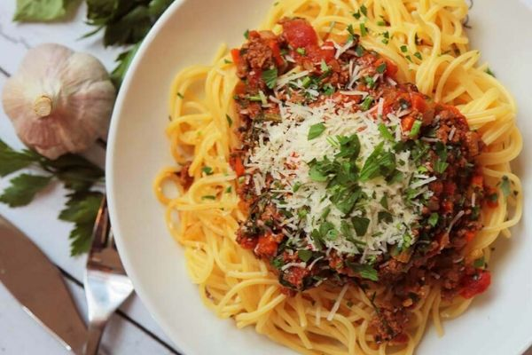

Spaghetti Bolognese Recipe

Everyone needs a basic spaghetti bolognese recipe that still tastes great, no matter how simple. Get that depth of flavour by cooking the sauce very gently until it’s super rich. This spaghetti bol is designed to be a low cost recipe.
Spaghetti Bolognese Ingredients
- 2 tablespoons of olive oil, 400 grams of beef mince, 1 diced onion, 2 chopped garlic cloves, 100g grated carrot, 2 x 400 grams of tins chopped tomatoes, 400ml stock (made from stock cube. Ideally beef, but any will do), 400 grams of dried spaghetti, some salt and pepper